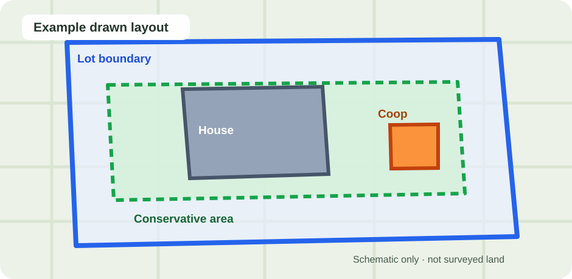

01 / DISCOVER
Start with your city
Search flock limits, roosters, poultry permits and housing requirements, with sources and verification scope.
Search city rulesCheck your city’s backyard chicken laws, including flock limits, rooster rules, permits and coop placement guidance. Then plan your coop on a real map.
Government references and the limits of each summary.
87 source-reviewed summaries, 13 still pending.
Sketch a placement and see what still needs checking.
Loading quick city check… Continue to the detailed map planner
Most sites give you a generic answer. CoopCheck separates what a government source supports from what still depends on your exact property.
Search flock limits, roosters, poultry permits and housing requirements, with sources and verification scope.
Search city rulesUse satellite imagery to outline your property, house and planned coop—not just a generic rectangle.
Open the free plannerGeometry checks are not permits. Zoning, neighboring structures and local amendments often need a manual check.
See source coverageDraw your lot, home and proposed coop on a satellite map. CoopCheck estimates supported geometry and clearly shows which placement or permit requirements it cannot verify automatically.
Planning aid only; not a survey, permit approval or legal determination.

Illustrative preview · not a surveyed propertyExplore selected cities below, or use search to find any of the 100 tracked city profiles.
City regulations differ—even within the same state. Use each state hub to compare local rules and check the official references.
Looking for New York, Minnesota, Wisconsin, Indiana or North Carolina? See the complete directory →
Even when a city allows chickens, your lot size, land-use district, HOA rules and nearby buildings may change what is permitted.
That depends on the municipality and your parcel. Search your city first, then confirm the current city code and applicable property zoning.
Flock limits vary widely. Some cities use a fixed number; others use lot area, zoning or distances to neighboring residences. A source-reviewed summary is not a parcel-specific approval.
Some municipalities ban roosters, while others regulate noise or allow them in certain agricultural districts. Read the city-specific sources before deciding.
No. It helps visualize supported geometry only. Learn why lot-line setbacks and distances from a neighboring house are different. Building permits, zoning, local exemptions, accurate surveys and other requirements may still need manual confirmation.
Enter your flock and available outdoor space to sketch a conceptual coop and run, estimate nest boxes and roost length, and export SVG, PNG or a browser-print PDF. University poultry guidance supports the space targets; this is not a build-ready structural drawing or city approval.
Explore independently calculated coop floor, outdoor run, nests and roost sizes. Answer a specific question by flock count, or check what a measured 4×6, 4×8 or 6×8 indoor coop can hold. All figures are husbandry planning estimates, not building or zoning approval.
Find local rules first. Then use the free coop mapping tool to work through the next steps.